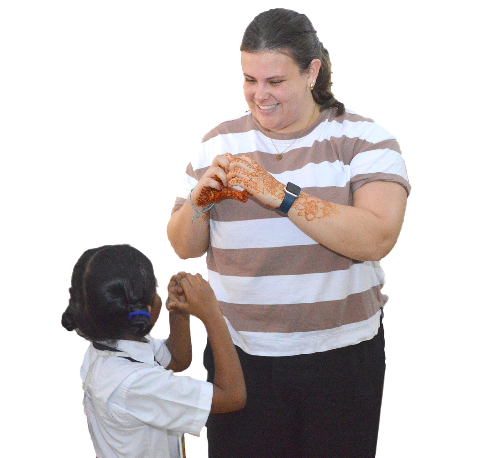
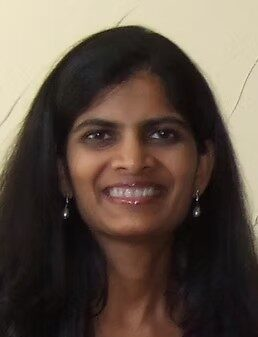
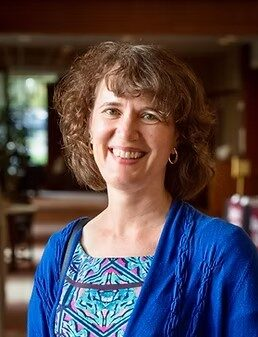
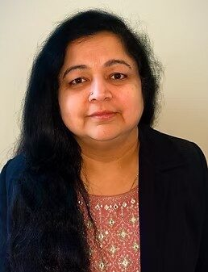
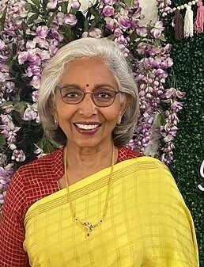
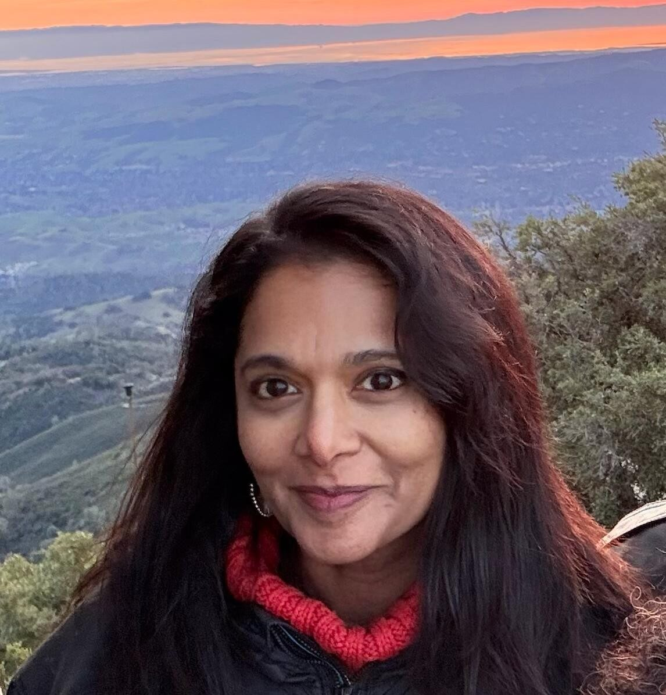
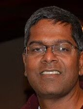

Team
The Aarti Team
Our team is an extended family of volunteers, donors, board members, community members, and even Aarti girls themselves. We all share the common drive to educate girls, empower women, and care for the needy.
View our India TeamBoard of Directors
Meet the people behind Aarti for Girls Inc.
Ms. Preeti Hari Nandanar
Chief Executive Officer
Preeti is the inaugural CEO of Aarti for Girls Inc., a US-based organization dedicated to supporting Aarti India. With a lifelong commitment to girls' empowerment through education, Preeti's passion was sparked by her grandmother's efforts to promote literacy among underserved girls and women. This commitment has driven her to be an active supporter of Aarti India for over 30 years.
Preeti brings over 15 years of experience in financial services, having worked in investment banking at JP Morgan and Citi. In 2017, she ventured into entrepreneurship, managing her own fashion label for six years. She now views her role at Aarti as her most impactful yet, focused on breaking the cycle of poverty through education for young girls.
An engineering graduate from IIT Chennai and an MBA from IIM Calcutta, Preeti resides in New York City with her family.

Ms. Deepthi Sigireddi
Board Member
Deepthi is a senior technologist currently working at a Silicon Valley startup. Growing up as a girl in India, she saw the disparities in educational opportunities for girls and women born into economically disadvantaged families. This led to a deep interest in bettering the lives of girls and women through education and empowerment.
Prior to joining the board of Aarti, Deepthi served as a mentor at her local Boys and Girls Club. She holds a Bachelor's in Engineering from IIT Madras and a Master's in Engineering from the University of Texas, Austin.

Ms. Bonnie Sue Zare
Board Member
Bonnie is a Professor of Sociology and the Director of Women’s and Gender Studies at Virginia Tech. She has made yearly stays in India since 2002, focusing on Telangana and Andhra Pradesh. Her research focuses on discourses of identity, feminism, and activism in contemporary India.
Zare’s essays are published in Women’s Studies International Forum, Humanity and Society, and South Asian Review, among others. Dr. Zare has brought seven groups of university students to Aarti to learn about on-the-ground change and build friendships.

Ms. Sridevi Joshi
Board Member
Sridevi originates from Kadapa, Andhra Pradesh, and has been associated with Aarti Home since it was established in 1992. She is motivated by Sandhya aunty's dedication to helping the disadvantaged, particularly in improving the lives of girls and women, and aspires to make a meaningful contribution to this noble cause.
Professionally, Sridevi is an engineer and a proud alumna of JNTU Anantapur and BITS Pilani. She holds the position of Senior Software Architect at Intel Corporation. Residing in Allentown, Pennsylvania, she shares her home with her son and daughter. In her leisure time she enjoys traveling, painting, and gardening.

Ms. Subashini Boyareddigari
Board Member
Subhashini is a dedicated person of service who moved to the US in 1976 with her husband, a medical doctor. She is an experienced fundraiser and leader, having volunteered in hospitals and schools and served for 13 years as a board member of Hope Inc., an organisation for battered women and children. Her mother tongue is Telugu, and she has served as convener for several Telugu Association of North America and American Telugu Association conventions.
Along with being a busy mother of two and grandmother of four, she has been an executive member and president of her local temple.

Ms. Roopa Reddy
Board Member · Founder & CEO, PPF
Roopa Reddy is the Founder and CEO of Providing Possibilities Foundation (PPF), a 501(c)(3) nonprofit aiding underserved communities in the US and India. PPF addresses basic human needs by feeding children, expanding educational access, and supporting individuals experiencing homelessness to create lasting change.
Involved with Aarti since 1992, Roopa formalized a PPF partnership in 2009. She drives fundraising, guides programming, and supports mental health and donor initiatives. PPF’s Banyan Tree Project, honoring her sister Lali Reddy, focuses on mental health advocacy, uplifting the LGBTQ+ community, and providing compassionate, inclusive care.
Bringing a background in biochemistry and molecular biology, Roopa applies an analytical lens to her philanthropy. She also practices litigation as a California attorney.

Mr. Obul Kambham
Board Member
Obul Kambham, a seasoned technologist and entrepreneur with 40 years of experience, has contributed to major tech companies including Apple, Symantec, Cisco, and VMware, as well as startups such as mPerpetuo and Automation Anywhere. He has successfully initiated three companies, leading to successful exits.
His time at Apple emphasized the importance of creating human-centric and intuitive solutions. He currently mentors and supports multiple startups and is keen on guiding young people based on his extensive experience.